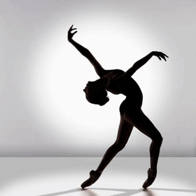

<html>
<head>
<style>
body {background-color: Gainsboro;}
h1   {color: Gainsboro;}
p    {color: black;}
</style>
</head>
</html>
<head><title>Балет</title></head>
<body>
<p><h1><p align=center>Балет</p align=center></h1></p>
<p><big><b>Бале́т</b> (фр. ballet, от итал. ballare — танцевать) — вид сценического искусства; спектакль, содержание которого воплощается в музыкально-хореографических образах. В основе классического балетного спектакля лежит определённый сюжет, драматургический замысел, либретто, в XX веке появился бессюжетный балет, драматургия которого основана на развитии, заложенном в музыке. Основными видами танца в балете являются классический танец и характерный танец, к которому, начиная с XIX века, относятся народные и национальные танцы, переработанные для исполнения в балетном спектакле. Немаловажную роль играет пантомима, с помощью которой актёры передают чувства героев, их «разговор» между собой, суть происходящего, а во многих спектаклях — также и гротеск.</p>
<p>В современном балете широко используются другие техники танца (прежде всего современного и джаз-танца), а также элементы гимнастики, акробатики, восточных единоборств и тому подобное.</p>
<p><b>Зарождение балета</b></p>
<p>В начале — как объединённая единым действием или настроением танцевальная сценка, эпизод в музыкальном представлении, опере. Заимствованный из Италии, во Франции расцветает как пышное торжественное зрелище — <b>придворный балет.</b> Началом балетной эпохи во Франции и во всём мире следует считать 15 октября 1581 года, когда при французском дворе состоялось представление зрелища, которое принято считать первым балетом — <b>«Комедийный балет королевы» (или «Цирцея»),</b> поставленное итальянским скрипачом, «главным интендантом музыки» Бальтазарини де Бельджозо. Музыкальную основу первых балетов составляли придворные танцы, входившие в старинную сюиту. Во второй половине XVII века появляются новые театральные жанры, такие как комедия-балет, опера-балет, в которых значительное место отводится балетной музыке, и делаются попытки её драматизировать. Но самостоятельным видом сценического искусства балет становится только во второй половине XVIII века благодаря реформам, осуществлённым французским балетмейстером Жан-Жоржем Новерром (1727—1810). Основываясь на эстетике французских просветителей, он создал спектакли, в которых содержание раскрывается в драматически выразительных образах.</p>
<p><b>Балет как искусство</b></p>
<p>В своей эволюции балет всё больше приближается к спорту, теряя по дороге драматургическое значение роли, порой опережает в технике, но отстаёт в содержании.</p>
<p>В комплексном обучении профессионала — артисту необходимо знание музыкальной культуры, истории, литературы и сценарной драматургии. В то же время с семи лет дети проходят гимнастическую подготовку, потому как балеты прошлого, сохранившиеся до наших дней, технически усовершенствовались, а балет модерн на классической основе, например балет Форсайта, требует серьёзной физической подготовки, так балерина Сильви Гийем начинала свой творческий путь именно с гимнастики.</p>
<p>Старинные балеты имели возвышенную эстетику, иногда ставились на античные сюжеты, например постановка Шарля Дидло </b>«Зефир и Флора».</b></p>
<p>Новая волна романтизма появилась в балете в начале XX века, её провозвестником стал балетмейстер <b>Михаил Фокин.</b></p>
<p>В России вплоть до XX века обучение хореографии, музыке, драматическому мастерству и различным прикладным театральным профессиям велось в одном учебном заведении — Императорском театральном училище. Смотря по успехам детей их определяли или переводили на соответствующее отделение. После революции 1917 года школы разделились и балетное образование начало существовать автономно. В то же время во многих театрах сохранялся смешанный репертуар: драматические представления чередовались с опереттой и балетными дивертисментами. Так, например, кроме постановок в Большом, Касьян Голейзовский ставил балетные спектакли в «Летучей мыши» и в «Мамонтовском театре миниатюр», среди которых была постановка <b>«Les Tableaux vivants»</b>, означающая «ожившую картинку», так как Голейзовский, в первую очередь, был художником. Это явление развивается в современном балете, как «ожившая картина», «ожившая фотография» и «ожившая скульптура».</big></p>
<p><big><a href="https://olya2shishova7.github.io/olya/">Главная страница</a></big></p>

</body>
</html>